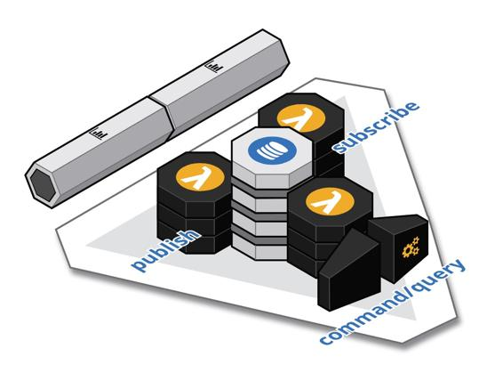

Trilateral API
Publish multiple interfaces for each component: a synchronous API for processing commands and queries, an asynchronous API for publishing events as the state of the component changes, and/or an asynchronous API for consuming the events emitted by other components.
